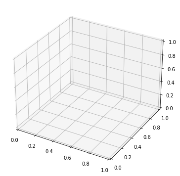
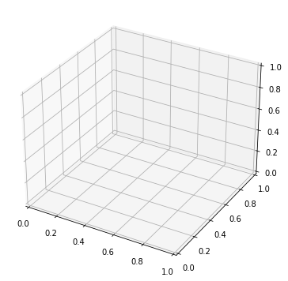

Matplotlib
Contents
Matplotlib¶
О библиотеке Matplotlib¶
Matplotlib является сторонней библиотекой для python, но как и NumPy входит в дистрибутив Anaconda. Установить его с помощью PyPI можно следующей командой.
python -m pip install matplotlib
Построение графиков в минималистичном варианте в Matplotlib осуществляется довольно просто: чтобы построить самый простой график, достаточно нескольких строк кода. Ниже приводится пример минимального исходного кода из документации и генерируемый ей график. При этом первые 4 из 7 строк этого кода импортируют библиотеки и генерируют данные для построения графиков и лишь три последние строки кода отвечают за построение графика.
import matplotlib.pyplot as plt
import numpy as np
x = np.linspace(0, 2 * np.pi, 200)
y = np.sin(x)
fig, ax = plt.subplots()
ax.plot(x, y)
plt.show()
Для построения графиков на плоскости (2D) в подавляющем большинстве случае из Matplotlib достаточно импортировать подмодуль pyplot. При этом этот подмодуль используется настолько повсеместно, что сформировался общепринятый псевдоним plt для pyplot, т.е. очень часто встречаются импорты вида
from matplotlib import pyplot as plt
или
import matplotlib.pyplot as plt
Кроме pyplot в Matplotlib есть огромное количество других подмодулей, непосредственное использование которых встречается гораздо реже. С полным списком можно ознакомиться в документации. Упомянем здесь только инструментарий mpl_toolkit.mplot3d, который может пригодиться при построении трехмерных графиков.
Иерархическая структура графиков в Matplotlib¶
Работать с Matplotlib гораздо проще, если понимать из каких объектов состоят графики Matplotlib, и какая между ними есть иерархия. Важно выделить 3 основных типа объектов: figure, axes и artist.
Рисунок выше иллюстрирует иерархию между ними.
Наверху иерархии находится
Figure, внутри которой происходит отрисовка всех остальных объектов. Фигура может принимать разную форму: в обычных скриптах эта фигура выводится в отдельном окне или встраивается в уже существующее пользовательское приложение с графическим интерфейсом, в блокнотахjupyterфигуры автоматически встраиваются в вывод ячейки.Внутри
Figureв произвольных позициях может быть произвольное количество объектовAxes, каждый из которых задаёт локальную систему координат для отображения графических объектов, а также отвечает за отображения координатных осей этой системы координат.Axesбывают разных типов: от самых стандартных декартовых или полярных координат на плоскости до трехмерных координатных систем или даже географических.Внутри системы координат любой из
Axesможно построить произвольное количество объектовArtist, каждый из который представляет графический элемент на графике, такой, как, например, кривая на плоскости или в пространстве, поверхность в пространстве, текст, геометрический примитив и т.д.
Если держать эту иерархию в голове, то легко понять какой объект за что отвечает и методы какого объекта необходимо вызывать, чтобы добиться требуемых изменений.
Код в ячейке ниже демонстрирует объекты всех трех типов:
Имя
figсвязано с объектом типаFigure;Имена
left_axesиright_axesсвязаны с объектами типаAxes;Имена
line_2Dиline_2Dсвязаны с объектами типаArtist, а более конкретно, с объектами типаLine.
import numpy as np
from matplotlib import pyplot as plt
# генерация данных
omega = 8 * np.pi
t = np.linspace(0, 1, 300)
x = t * np.cos(omega * t)
y = t * np.sin(omega * t)
z = t
# параметры
small_fontsize = 18
medium_fontsize = 20
large_fontsize = 22
# создание `figure`
fig = plt.figure(figsize=(14, 7))
# настройка `figure`
fig.suptitle("Структура графиков в Matplotlib", size=large_fontsize)
fig.set_tight_layout(True)
# создание `axes` на левой половине и правой половине `figure`
left_axes = fig.add_subplot(1, 2, 1)
right_axes = fig.add_subplot(1, 2, 2, projection="3d")
# построение и настройка графика в `axes` на левой половине `figure`
line_2D, = left_axes.plot(x, y)
line_2D.set_label("Спираль, вид сверху")
line_2D.set_color("red")
# настройка `axes` в левой половине `figure`
left_axes.xaxis.set_label_text("$x$", size=small_fontsize)
left_axes.yaxis.set_label_text("$y$", size=small_fontsize)
left_axes.set_title("2D", size=medium_fontsize)
left_axes.legend(fontsize=small_fontsize)
left_axes.grid()
# построение и настройка графика в `axes` на правой половине `figure`
line_3D, = right_axes.plot(x, y, z)
line_3D.set_label("Спираль")
line_3D.set_color("red")
# настройка `axes` в левой половине `figure`
right_axes.xaxis.set_label_text("$x$", size=small_fontsize)
right_axes.yaxis.set_label_text("$y$", size=small_fontsize)
right_axes.zaxis.set_label_text("$z$", size=small_fontsize)
right_axes.set_title("3D", size=medium_fontsize)
right_axes.legend(fontsize=small_fontsize)
<matplotlib.legend.Legend at 0x18d4d073d60>
Как строить графики¶
Стиль программирования¶
Прежде всего стоит отметить, то что Matplotlib поддерживает построение графиков в двух стилях программирования.
Первый из них черпает вдохновение из математического пакета matlab. При таком подходе программист возлагает создание и управление всеми фигурами и осями на библиотеку Matplotlib. Такой подход можно назвать неявным и разработчики библиотеки не рекомендуют прибегать к нему при построении хоть сколько-нибудь сложных графиков. Тем не менее в документации встречаются примеры, написанные в таком стиле, поэтому полезно иметь представление о существовании такого стиля.
Ниже приводится создания графика в таком стиле. Обратите внимание, что все методы при таком подходе вызываются напрямую от plt, а библиотека Matplotlib сама следит за тем, какая фигура и какие оси были созданы (или активированы в общем случае) последними.
import numpy as np
from matplotlib import pyplot as plt
x = np.linspace(0, 2, 100) # Sample data.
plt.figure(figsize=(5, 2.7), layout='constrained')
plt.plot(x, x, label='linear') # Plot some data on the (implicit) axes.
plt.plot(x, x**2, label='quadratic') # etc.
plt.plot(x, x**3, label='cubic')
plt.xlabel('x label')
plt.ylabel('y label')
plt.title("Simple Plot")
plt.legend()
<matplotlib.legend.Legend at 0x20b808bffd0>

Второй стиль называют объектно-ориентированным, так как он подразумевает создание в явном виде объектов фигур и осей и последующее использование этих объектов для совершения связанных с ними операций, таких как, например, построение графиков в них. Такой подход как правило приводит к гораздо более читабельному, гибкому и прозрачному коду, т.к. все операции совершаются в явном виде.
В ячейке ниже находится исходных код из примера выше, но переделанный под объектно-ориентированный стиль. Обратите внимание, что почти все методы вызываются не от plt, а объекта ax, который соответствует конкретным заранее созданным осям.
x = np.linspace(0, 2, 100) # Sample data.
# Note that even in the OO-style, we use `.pyplot.figure` to create the Figure.
fig, ax = plt.subplots(figsize=(5, 2.7), layout='constrained')
ax.plot(x, x, label='linear') # Plot some data on the axes.
ax.plot(x, x**2, label='quadratic') # Plot more data on the axes...
ax.plot(x, x**3, label='cubic') # ... and some more.
ax.set_xlabel('x label') # Add an x-label to the axes.
ax.set_ylabel('y label') # Add a y-label to the axes.
ax.set_title("Simple Plot") # Add a title to the axes.
ax.legend(); # Add a legend.
Автор курса рекомендует прибегать именно к объектно-ориентированному подходу.
1 Figure - 1 Axes¶
Начнем с ситуации попроще, когда для визуализации данных хватает одного Axes. В таком случае проще всего воспользоваться методом subplots, который по-умолчанию создают фигуру с одними осями и возвращает ссылки на них.
Удобно сразу же указать и размер требуемой фигуры параметром figsize. Ниже создаётся фигура с осями по этому рецепту.
Tip
По умолчанию на фигуре остаются небольшие поля, т.е. оси занимают не все пространство на фигуре. Автор курса почти всегда передаёт строку "tight" в качестве параметра layout, чтобы максимально эффективно использовать пространство фигуры.
fig, ax = plt.subplots(figsize=(5, 5), layout="tight")
print(type(fig), type(ax))
<class 'matplotlib.figure.Figure'> <class 'matplotlib.axes._subplots.AxesSubplot'>
Важно понимать, что нельзя поменять вид осей, когда они уже созданы, т.е. если нужны полярные или трехмерные оси, то необходимо указать это на этапе их создания. В методе subplots за это отвечает параметр subplot_kw, который принимает словарь параметров и применяет эти параметры при создании осей внутри фигуры. За тип осей отвечает параметр projection, который может принимать следующие значения.
|
вид системы координат |
|---|---|
|
Декартова прямоугольная система координат на плоскости (значение по умолчанию). |
|
Полярная система координат |
|
Прямоугольная система координат в трехмерном пространстве |
Note
Ниже будет показано, что этим же методом subplots удобно создавать таблицу осей внутри фигуры. Параметр subplot_kw используется при создании всех осей внутри одной фигуры, а значит таким подходом не выйдет на одной фигуре создать набор осей разного вида. В таком случае нет ничего лучше, чем использовать метод add_subplot.
fig1, ax1 = plt.subplots(figsize=(5, 5), layout="tight", subplot_kw={"projection": "rectilinear"})
fig2, ax2 = plt.subplots(figsize=(5, 5), layout="tight", subplot_kw={"projection": "polar"})
fig3, ax3 = plt.subplots(figsize=(5, 5), layout="tight", subplot_kw={"projection": "3d"})
print(type(ax1), type(ax2), type(ax3))
print(isinstance(ax1, plt.Axes), isinstance(ax2, plt.Axes), isinstance(ax3, plt.Axes))
<class 'matplotlib.axes._subplots.AxesSubplot'> <class 'matplotlib.axes._subplots.PolarAxesSubplot'> <class 'matplotlib.axes._subplots.Axes3DSubplot'>
True True True
 

Когда оси созданы, можно на них рисовать. Тип доступных графиков определяется типом осей, т.е. на плоских осях не выйдет рисовать трехмерные графики и т.п. Чтобы построить график в нужных осях, необходимо просто вызывать правильный метод от объекта этих осей.
x = np.linspace(0, 2*np.pi, 100)
y = np.sin(x)
fig, ax = plt.subplots(figsize=(5, 5), layout="tight")
ax.plot(x, y)
[<matplotlib.lines.Line2D at 0x2c397f5f070>]
Каждый вызов такого метода добавляет одного или несколько artist на оси, кортеж ссылок на которые он возвращает вызывающему коду. Далее эти ссылки могут быть использованы для изменения графического элемента. Ниже демонстрируется такая возможность: сначала создаётся линейный график функции \(y = \sin(x)\), а затем у объекта созданной линии подменяются \(y\) координаты на уполовиненные прежние.
Tip
Можно добавлять произвольное количество элементов на график.
x = np.linspace(0, 2*np.pi, 100)
y1 = np.sin(x)
y2 = np.cos(x)
fig, ax = plt.subplots(figsize=(5, 5), layout="tight")
sinusoid, cosinusoid = ax.plot(x, y1, x, y2)
sinusoid.set_ydata(0.5*sinusoid.get_ydata())
print(type(sinusoid), isinstance(sinusoid, plt.Artist))
<class 'matplotlib.lines.Line2D'> True
Тем не менее обычно гораздо удобнее сразу создать графический элемент в нужном виде. Поэтому создание ссылок на объекты типа Artist встречается гораздо реже, чем на объекты типа Axes и Figure.
1 Figure - N Axes¶
В Matplotlib предусмотрено несколько путей, чтобы создавать несколько осей внутри одной фигуры. Подробно почитать об этом в документации можно по ссылке. В большинстве ситуаций хватает все того же метода subplots.
Метод subplots позволяет создавать фигуры с как-бы таблицей из осей. За количество строк и столбцов таблицы отвечают параметры nrows (number of rows) и ncols (number of columns) соответственно. В ячейке ниже создаётся фигура с 6 осями внутри неё в виде таблицы из двух строк и трех столбцов.
fig, axs = plt.subplots(figsize=(9, 6), nrows=2, ncols=3, layout="tight")
Если создаётся больше одних осей, то вторым значением subplots возвращает сразу NumPy массив объектов Axes формы, совпадающей с формой таблицы.
print(f"{type(axs)=}")
print(f"{axs.shape=}")
type(axs)=<class 'numpy.ndarray'>
axs.shape=(2, 3)
Элементы этого массива далее и используется для построения графика в нужных осях.
x = np.linspace(0, 2*np.pi, 100)
ncols = 5
fig, axs = plt.subplots(figsize=(3*ncols, 3), ncols=ncols, layout="tight")
fig.suptitle("Синусоиды с разными частотами")
for i in range(ncols):
k = i + 1
y = np.sin(k * x)
axs[i].plot(x, y)
axs[i].set_title(fr"$\sin({k}x)$")
axs[i].set_xlabel(r"$x$")
axs[i].set_ylabel(r"$y$")